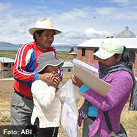

El impacto de la falta de boletas censales en algunas zonas del país y de haber llenado con lápiz las respuestas del censo podría ser dimensionado correctamente con la aplicación de una encuesta de vigilancia y control posterior al operativo censal del pasado miércoles. La encuesta de vigilancia y control es un instrumento para verificar si hubo un subregistro de la población por falta de encuestadores, boletas o cualquier otro tipo de contingencia.
Este jueves, un día después del Censo, el Instituto Nacional de Estadística (INE) anunció a que enviará a empadronadores a las casas urbanas que no fueron alcanzadas por la encuesta nacional. La respuesta tiene que ver con la denuncia de muchas personas, especialmente en la ciudad de Santa Cruz, de no haber sido censadas el miércoles.
El hecho denota un subregistro de la población en algunas ciudades, puesto que en las provincias (donde también faltaron boletas) el Censo debe durar hasta el viernes 23 de noviembre. El investigador y estadístico Álvaro Chirino explicó que precisamente una encuesta de verificación y control podría detectar si hubo un subregistro o si hubo modificación de las respuestas registradas con lápiz.
El director del Instituto de Investigaciones Sociológicas de la Universidad Mayor de San Andrés, Rene Pereira, insistió también en que una encuesta de calidad debería realizarse a los ocho días del censo, aunque el INE ha descartado la utilización de ese instrumento. La encuesta de verificación, explicó, mostraría en qué grado se alcanzó a cubrir a la población con el censo; y si la falta de cobertura fuera mayor al 5%, el operativo sería “cuestionable”.
Chirino también aclaró que una encuesta de verificación y control podría detectar si las respuestas fueron modificadas o borradas pues el instrumento consiste en retornar a ciertos domicilios elegidos (muestra) para volver a aplicar la boleta censal. En este caso se verifica si las respuestas son las mismas o hubo una variación para detectar en qué fase del proceso estuvo la falla (escaneo de la boleta, transcripción, aplicación de la encuesta, etc.). El instrumento también sirve para ver si hubo sobreregistro (personas censadas más de una vez) u omisiones.
Tanto Pereira como Chirino participan de La Ruta del Censo, un colectivo de instituciones que apoyan la concreción del censo.
Observación
El pasado 21 de noviembre, día del Censo, seis observadores de Fundación ARU participaron de un proceso de observación y acompañamiento ciudadano durante el operativo censal en la ciudad de La Paz y El Alto, sobre la base de un protocolo que considera la capacitación de los empadronadores, la organización logística, la aplicación de la boleta censal y los incentivos a los empadronadores.
Aunque las conclusiones de esta observación se podrán conocer la próxima semana, el estadístico Álvaro Chirino calificó como “preocupante” a la forma en que se desarrolló el Censo. Y es que en El Alto y La Paz, ciudades de “dominio” del Instituto Nacional de Estadística (INE), hubo como mínimo una falta de coordinación con los empadronadores.
Chirino explicó que en su recorrido por El Alto no atestiguó falta de boletas ni de personal, pero sí una descompensación del trabajo de los empadronadores (unos terminaron al mediodía, mientras que otros extendieron su trabajo varias horas más) y los croquis de las viviendas a visitar no coincidían con la realidad, sin contar con que en otros casos hasta las cuatro de la tarde no había ni refrigerios ni el estipendio prometido, un incentivo que puede influir en el trabajo de los empadronadores y la manera de levantar los datos.
El investigador y estadístico Álvaro Chirino puede ser contactado en achirino@aru.org.bo